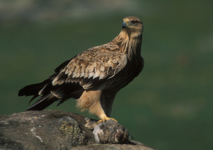
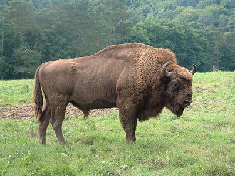
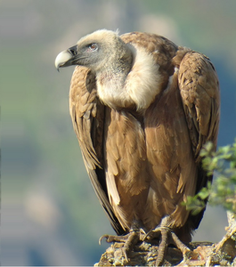
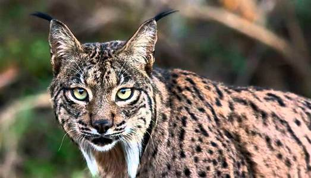
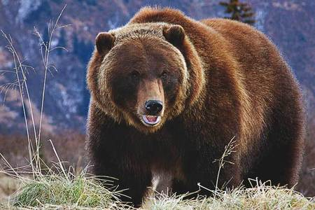
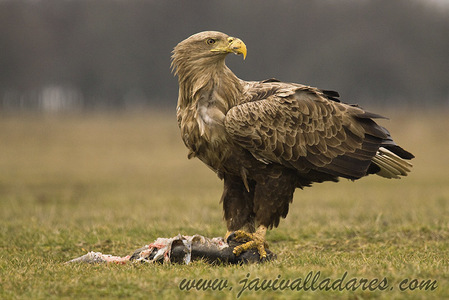

EUROPA
Águila imperial ibérica

El águila imperial ibérica es una especie de ave accipitriforme de la familia Accipitridae. Es una de las aves endémicas de la península ibérica. Hasta no hace mucho se la consideraba una subespecie del águila imperial, pero los estudios de ADN de ambas aves realizados por los investigadores Seibold, Helbig, Meyburg, Negro y Wink en 1996 demostraron que estaban lo suficientemente separadas como para constituir cada una de ellas una especie válida. El águila imperial ibérica es un ave amenazada; en 2013 se censaron 407 parejas en la península ibérica.
Mas informaciónBisonte Europeo

El bisonte europeo es una especie de mamífero artiodáctilo de la familia Bovidae. Es el mamífero de mayor tamaño de Europa y uno de los más amenazados, por lo que es objeto de varios programas de reproducción en cautividad llevados a cabo en parques zoológicos.
Mas informaciónBuitre Leonado

El buitre leonado es una especie de ave accipitriforme de la familia Accipitridae y uno de los pocos buitres que se pueden encontrar en Europa junto con el buitre negro, el alimoche y el quebrantahuesos.
Mas informaciónLince Ibérico

El lince ibérico es una especie de mamífero carnívoro de la familia Felidae, endémico de la península ibérica. En 2013 se calculaba que solo existían dos poblaciones en Andalucía aisladas entre sí con un total de algo más de trescientos individuos en aumento, más otra en los Montes de Toledo de unos quince individuos y por ello escasamente viable, lo que lo convierte en la especie de felinos más amenazada del mundo.
Mas informaciónOso Pardo

El oso pardo europeo es una subespecie del oso pardo propia de Europa, desde la península ibérica a Escandinavia y Rusia.
Mas informaciónPigargo Europeo

El pigargo europeo es una especie de ave accipitriforme de la familia Accipitridae. Anida en el norte de Eurasia. No se reconocen subespecies.
Mas información